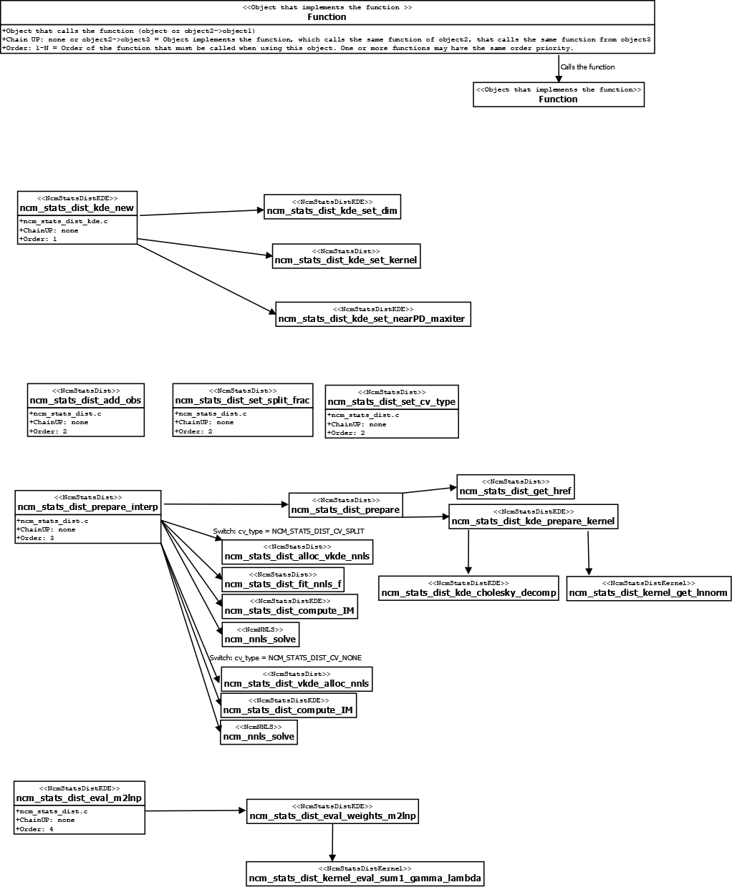

| Top |
NcmStatsDistKDENcmStatsDistKDE — Abstract class for implementing N-dimensional probability distributions with a fixed density estimator kernel. |
Functions
Properties
| NcmMatrix * | cov-fixed | Read / Write |
| NcmStatsDistKDECovType | cov-type | Read / Write / Construct |
| guint | nearPD-maxiter | Read / Write / Construct |
Object Hierarchy
GEnum ╰── NcmStatsDistKDECovType GObject ╰── NcmStatsDist ╰── NcmStatsDistKDE ╰── NcmStatsDistVKDE
Description
Abstract object to reconstruct an arbitrary N-dimensional probability distribution. This object provides the complementary tools to perform a radial basis interpolation in a multidimensional function using the NcmStatsDist class.
This object sets the kernel $\phi$ to be used in the radial basis interpolation. This object also implements some calculations needed in the NcmStatsDist class, such as the covariance matrix of the whole sample and its Cholesky decomposition, the preparation of the interpolation matrix $IM$, the kernel normalization factor, and given a sample vector $\vec{x}$, the distribution evaluated in these points. Some of these calculations are explained below.
The NcmStatsDistKDE class uses one covariance matrix for all the sample points. So, given $n$ points, there is only one covariance matrix $\Sigma$ that is used for all the $i$-th kernels $\phi(|x-x_i|, \Sigma)$. After the covariance matrix is computed, the algorithm computes the Cholesky decomposition, that is \begin{align} \Sigma &= AA^T ,\end{align} where $A$ is a triangular positive defined matrix and $A^T$ is its transpose. The $A$ matrix is used in the least square squares calculation method that is called in the NcmStatsDist class.
The object also prepares the interpolation matrix to be implemented in the least-squares problem, that is, given the relation
$\left[\begin{array}{cccc} \phi\left(\left\|\mathbf{x}_{1}-\mathbf{x}_{1}\right\|\right) & \phi\left(\left\|\mathbf{x}_{2}-\mathbf{x}_{1}\right\|\right) & \ldots & \phi\left(\left\|\mathbf{x}_{n}-\mathbf{x}_{1}\right\|\right) \newline \phi\left(\left\|\mathbf{x}_{1}-\mathbf{x}_{2}\right\|\right) & \phi\left(\left\|\mathbf{x}_{2}-\mathbf{x}_{2}\right\|\right) & \ldots & \phi\left(\left\|\mathbf{x}_{n}-\mathbf{x}_{2}\right\|\right) \newline \vdots & \vdots & & \vdots \newline \phi\left(\left\|\mathbf{x}_{1}-\mathbf{x}_{n}\right\|\right) & \phi\left(\left\|\mathbf{x}_{2}-\mathbf{x}_{n}\right\|\right) & \ldots & \phi\left(\left\|\mathbf{x}_{n}-\mathbf{x}_{n}\right\|\right) \end{array}\right]\left[\begin{array}{c} \lambda_{1} \newline \lambda_{2} \newline \vdots \newline \lambda_{n} \end{array}\right]=\left[\begin{array}{c} g_{1} \newline g_{2} \newline \vdots \newline g_{n} ,\end{array}\right]$
which is explained in the NcmStatsDist class, this object prepares the first matrix for all the $n$ points in the sample, using the covariance matrix and the defined kernel. The NcmStatsDist class implements the solution for this relation and then one can compute the distribution for a given vector $\vec{x}$ using a method of the NcmStatsDist class but that is implemented in this object.
The user must provide input the values: sdk
, CV_type
- ncm_stats_dist_kde_new(), y
- ncm_stats_dist_add_obs(), split_frac
- ncm_stats_dist_set_split_frac(),
over_smooth
- ncm_stats_dist_set_over_smooth(), $v(x)$ - ncm_stats_dist_prepare_interp().
To see an example of how to use this object and the main functions that are called within each function,
check the fluxogram at the end of this documentation,
where the order of the functions that should be called by the user and some of the functions that the algorithm calls.

Functions
ncm_stats_dist_kde_new ()
NcmStatsDistKDE * ncm_stats_dist_kde_new (NcmStatsDistKernel *sdk,NcmStatsDistCV CV_type);
Creates a new NcmStatsDistKDE object using sdk
as
kernel and CV_type
as cross-validation method.
ncm_stats_dist_kde_ref ()
NcmStatsDistKDE *
ncm_stats_dist_kde_ref (NcmStatsDistKDE *sdkde);
Increases the reference count of sdkde
.
ncm_stats_dist_kde_free ()
void
ncm_stats_dist_kde_free (NcmStatsDistKDE *sdkde);
Decreases the reference count of sdkde
.
ncm_stats_dist_kde_clear ()
void
ncm_stats_dist_kde_clear (NcmStatsDistKDE **sdkde);
Decreases the reference count of *sdkde
and sets the pointer *sdkde
to NULL.
ncm_stats_dist_kde_set_nearPD_maxiter ()
void ncm_stats_dist_kde_set_nearPD_maxiter (NcmStatsDistKDE *sdkde,const guint maxiter);
Sets the maximum number of iterations when finding the
nearest positive definite covariance matrix to maxiter
. This function is implemented
as a property and is called in the _cholesky_decomp and in the ncm_stats_dist_kde_prepare_kernel
function.
ncm_stats_dist_kde_get_nearPD_maxiter ()
guint
ncm_stats_dist_kde_get_nearPD_maxiter (NcmStatsDistKDE *sdkde);
ncm_stats_dist_kde_set_cov_type ()
void ncm_stats_dist_kde_set_cov_type (NcmStatsDistKDE *sdkde,NcmStatsDistKDECovType cov_type);
Sets the covariance type to use in kernel interpolation.
ncm_stats_dist_kde_get_cov_type ()
NcmStatsDistKDECovType
ncm_stats_dist_kde_get_cov_type (NcmStatsDistKDE *sdkde);
ncm_stats_dist_kde_set_cov_fixed ()
void ncm_stats_dist_kde_set_cov_fixed (NcmStatsDistKDE *sdkde,NcmMatrix *cov_fixed);
Sets the covariance matrix to be used when NcmStatsDistKDECovType is
set to NCM_STATS_DIST_KDE_COV_TYPE_FIXED. A copy of the matrix
cov_fixed
is made and saved into the object.
ncm_stats_dist_kde_peek_cov_fixed ()
NcmMatrix *
ncm_stats_dist_kde_peek_cov_fixed (NcmStatsDistKDE *sdkde);
Gets the currently used fixed covariance matrix.
Types and Values
Property Details
The “cov-fixed” property
“cov-fixed” NcmMatrix *
Fixed covariance matrix.
Owner: NcmStatsDistKDE
Flags: Read / Write
The “cov-type” property
“cov-type” NcmStatsDistKDECovType
Covariance type.
Owner: NcmStatsDistKDE
Flags: Read / Write / Construct
Default value: NCM_STATS_DIST_KDE_COV_TYPE_SAMPLE
The “nearPD-maxiter” property
“nearPD-maxiter” guint
Maximum number of iterations in the nearPD call.
Owner: NcmStatsDistKDE
Flags: Read / Write / Construct
Allowed values: >= 1
Default value: 200